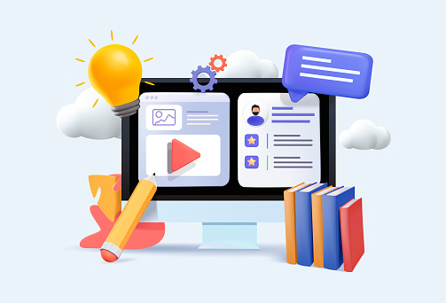
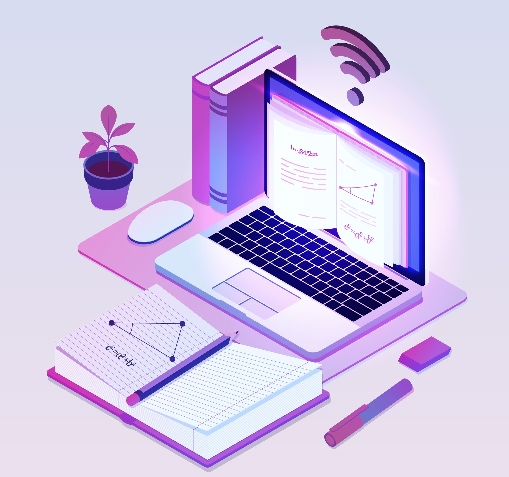
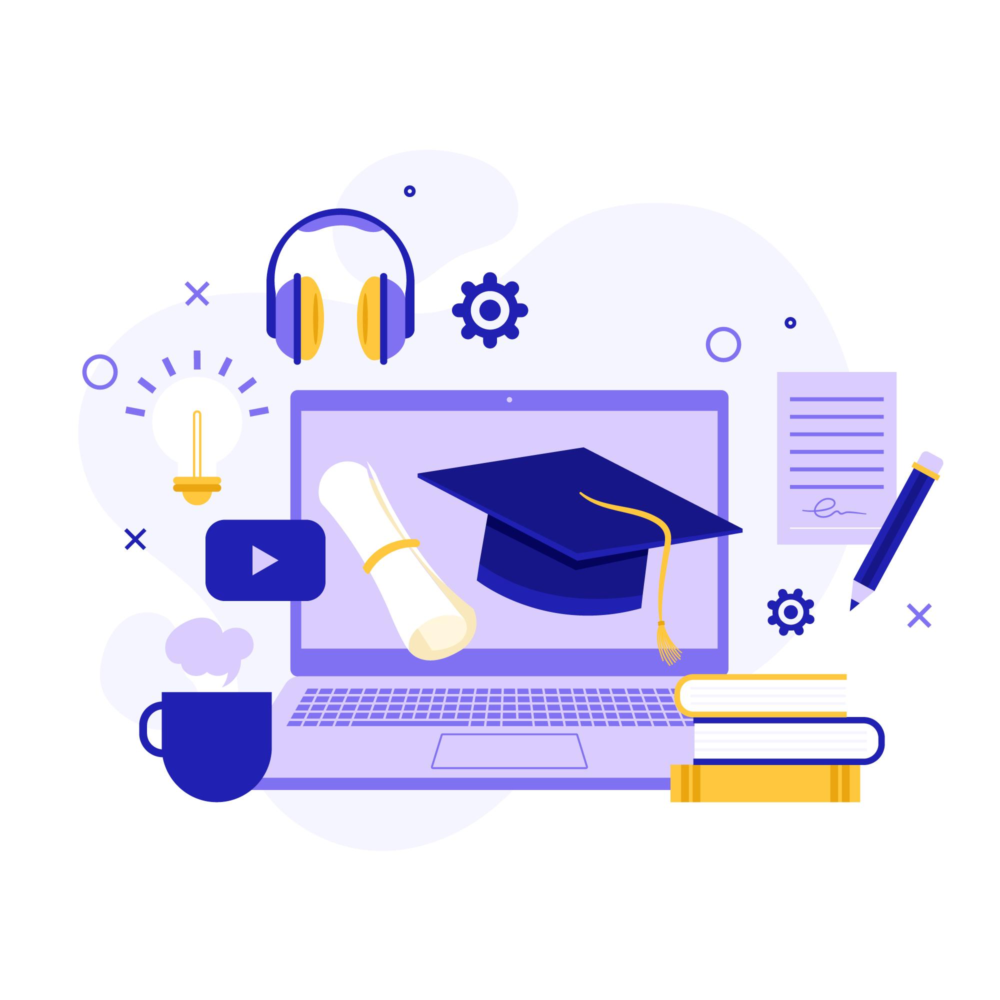
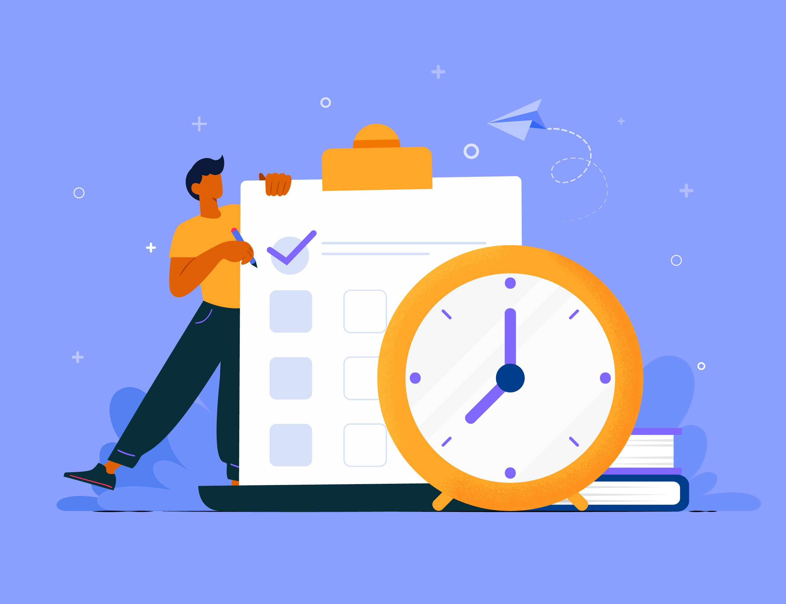

Introducción
En la era digital, la educación en línea y el autodidactismo han
adquirido una importancia cada vez mayor. Estas modalidades de
aprendizaje ofrecen flexibilidad, accesibilidad y la posibilidad de
adquirir conocimientos en cualquier momento y lugar. En este tutorial,
te proporcionaré algunos consejos prácticos para aprovechar al máximo
la educación en línea y desarrollar tus habilidades como autodidacta.

Establecer metas claras
Antes de comenzar tu viaje de aprendizaje en línea, es fundamental
establecer metas claras. Define qué deseas lograr y cómo planeas
hacerlo. Esto te ayudará a mantener la motivación y a orientar tus
esfuerzos hacia el éxito.

Encontrar recursos confiables
Internet está lleno de información, pero no toda es confiable.
Asegúrate de utilizar fuentes de información confiables, como sitios
web académicos, plataformas de aprendizaje en línea reconocidas y
recursos educativos de calidad. Investiga y evalúa la credibilidad de
las fuentes antes de confiar en ellas.

Explorar varias plataformas de aprendizaje en línea
Existen numerosas plataformas en línea que ofrecen cursos y programas
educativos de alta calidad. Investiga y elige las que mejor se adapten
a tus necesidades. Algunas plataformas populares incluyen Coursera,
Udemy, Khan Academy y edX. Aprovecha las opciones gratuitas y de pago
para ampliar tus conocimientos. Además de estas plataformas también se
puede optar por opciones más tradicionales como universidades o el
SENA.

Organización del tiempo
La educación en línea y el autodidactismo requieren disciplina y una
buena gestión del tiempo. Establece un horario regular para estudiar y
adhiérete a él. Organiza tus tareas y asigna tiempo para cada una de
ellas. Establece límites claros para evitar la procrastinación y
garantizar un progreso constante.

Para llevar un registro efectivo de tu productividad y garantizar
pausas adecuadas, puedes implementar la técnica Pomodoro. Esta
metodología se basa en trabajar de manera concentrada durante 25
minutos (un "pomodoro") y luego descansar durante 5 minutos. De esta
manera, puedes monitorear cuántos pomodoros completas en un día, lo
que te permite tener una noción clara de cuánto tiempo estuviste
enfocado en tus tareas. Además, los descansos regulares te aseguran el
tiempo necesario para reponer energías.
Es importante destacar que durante los descansos es fundamental
priorizar el descanso tanto para los ojos como para el cuerpo. Evita
realizar actividades que puedan distraerte, como revisar redes
sociales o jugar en el celular, ya que esto puede interrumpir tu
concentración y disminuir la efectividad de la técnica Pomodoro. En
cambio, te recomiendo realizar actividades que promuevan el descanso
activo, como estiramientos suaves, tomar agua o simplemente cerrar los
ojos y relajarte por unos momentos.
Recuerda que la técnica Pomodoro es una herramienta útil para aumentar
la productividad y mantener un equilibrio entre el trabajo y el
descanso. Adaptarla a tu estilo y ritmo de trabajo es clave para
obtener los mejores resultados. ¡Anímate a probarla y descubre cómo
puedes optimizar tu tiempo y rendimiento!

Utilizar herramientas adecuadas
El uso de las herramientas adecuadas puede potenciar tu experiencia de
aprendizaje en línea. Aprovecha las aplicaciones y software
específicos para la educación en línea, como herramientas de gestión
de tareas, aplicaciones de toma de notas o plataformas de
colaboración. Estas herramientas te permitirán organizar tu material
de estudio, tomar apuntes eficientemente y colaborar con otros
estudiantes de manera efectiva.
Seguir el proceso
Realiza evaluaciones periódicas de tu progreso para asegurarte de que
estás alcanzando tus metas. Puedes hacer pruebas, resolver ejercicios
prácticos o buscar retroalimentación de profesionales en el campo.
Aprender cómo te estás desarrollando te ayudará a identificar áreas de
mejora y ajustar tu enfoque de estudio si es necesario.

Mantener la motivación
La educación en línea y el autodidactismo pueden ser desafiantes,
especialmente cuando no hay un instructor físico que te guíe. Para
mantener la motivación, es importante establecer un sistema de
recompensas y celebrar tus logros a medida que avanzas en tu proceso
de aprendizaje. Esto puede incluir pequeños descansos para disfrutar
de actividades que te gusten, como leer un libro, ver una película o
hacer ejercicio. Además, mantén siempre presente el propósito y la
pasión que te impulsan a aprender por tu cuenta.